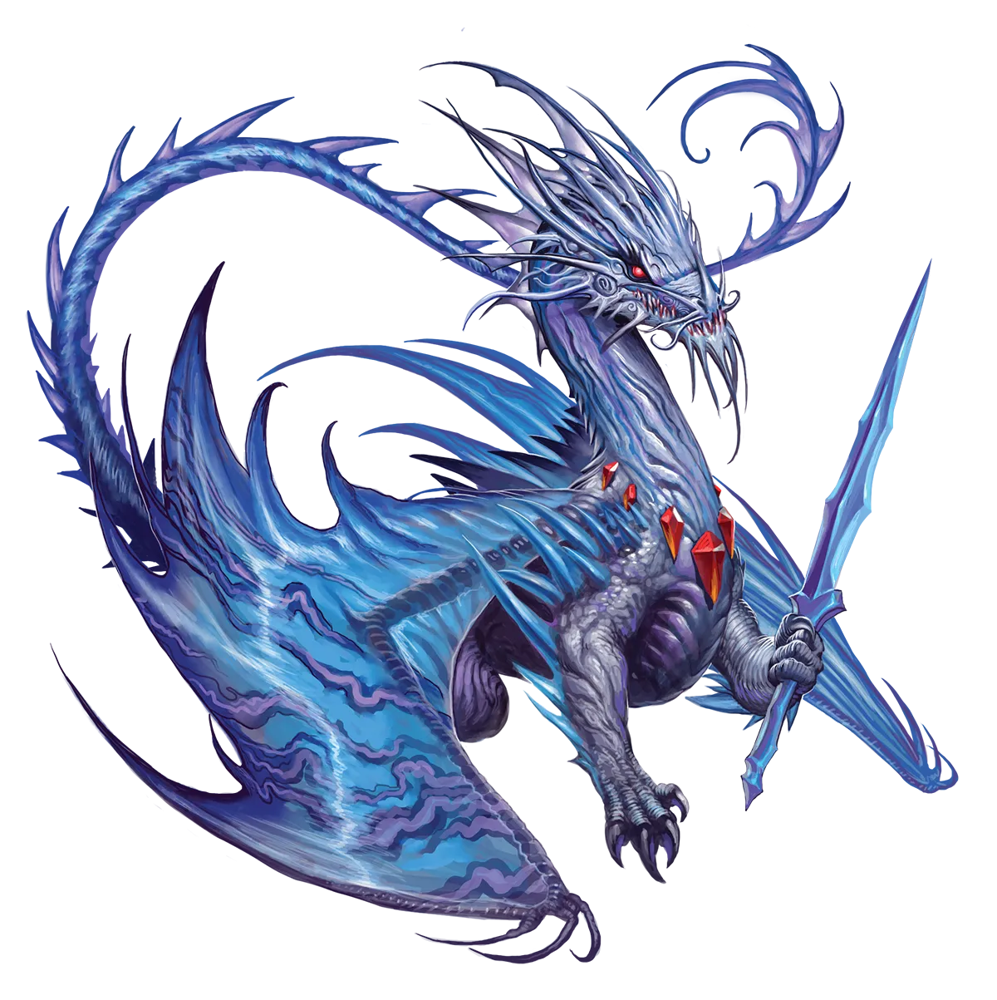
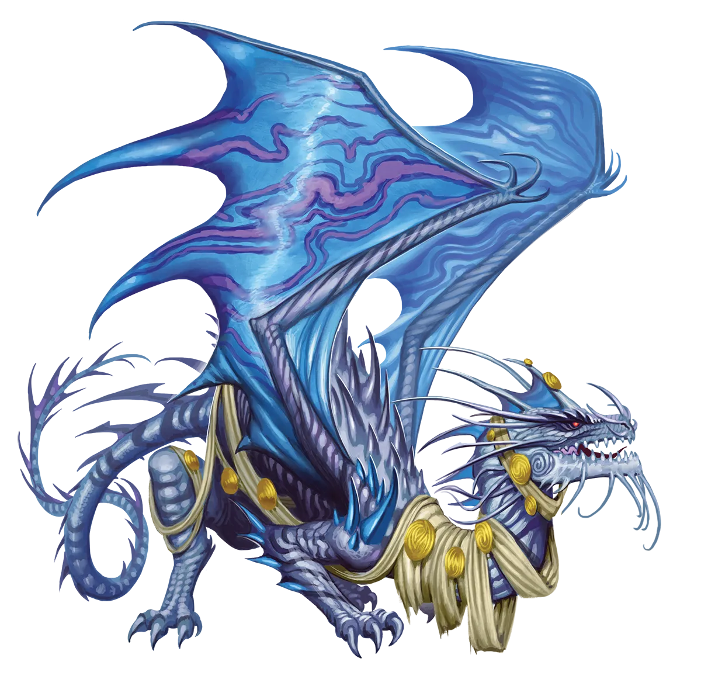

登月
新生的永恒月华龙有时会表现出一种异常夸张的追星般的热情，几乎是一种他人难以理解的孩童般的好奇。其根源比你想象的要简单：基本上，直到他们举行仪式并闯入凡人舞台的那一刻之前，我们的世界，即凡人世界，对他们来说并不完全是“真实”的。它就像一个书或戏剧中的虚构领域，他们可以观看却永远无法进入。演员们将表演与观众之间的分隔称为“第四面墙”，因为在舞台边缘有一堵想象中的墙。通过打破第四面墙，永恒月华龙打开了一个充满奇迹的世界。
月华龙 Lunar Dragon |
|
|
月华龙是凡人生死的热情观察者。即便是传统派，也会穿梭于那些令他们感兴趣的星球之间，观察着世事变迁。他们对待凡人的悲欢离合，就像观众对待一场宏大舞台上即兴上演的戏剧一般。下一个出人意料的剧情转折会是什么呢？然而，永恒者出身于月华龙之中，他们渴望更深入地介入，打破自身与眼前上演事件之间的“第四面墙”。当龙感到需要将自己插入叙事之中时，仪式便是他们最好的方式。这可能是因为某人陷入困境、需要帮助，或是正做出一个糟糕的决定，正如观众可能会对剧中角色喝倒彩并给出“等等，别开那扇门！”这样的建议。如果事态即将杀死他们最喜爱的凡人“角色”，一条月华龙可能会举行仪式来拯救那人的性命。对被救的凡人而言，这可能是一件令人心神不宁的事。在他们的视角里，一条龙凭空出现，做出牺牲来挽救他们的生命。但当他们回过神来，却意识到这条龙不知何故知晓他们所有的私密细节，并且现在想要跟随他们，对他们日常生活中的种种事件感到兴奋。这对于那些原本默默无闻的凡人来说尤其令人不安。传统派认为永恒者举行仪式并进行干预是粗鲁的，但根据永恒者的行为方式，这也有可能变得有趣。这就像一个人在看戏时，另一位观众跳上舞台，开始即兴把自己编进表演里的反应一样。如果这些滑稽举动带来了一场有趣的表演，一切都会被原谅。但如果传统派觉得干预通过改变“角色”的命运或他们之间的关系而毁掉了结局，他们可能会愤怒到暴力地消灭这条永光龙。 永恒月华龙几乎总是加入那些他们在仪式前就一直在观察的凡人。如果他们最喜欢的凡人还不是一个冒险团队，月华龙可能会说服他们联合起来组成这样一个团体。这些冒险伙伴对永恒月华龙的反应，取决于他们有多看重自己的隐私。一方面，有这么一条似乎知晓他们私密时刻的古怪龙类陪伴，会令人极度不安。另一方面，拥有一个视你为世界上最重要的人之一、永远站在你身边、为你的每一次成功而欢欣鼓舞的伙伴，是一种很棒的感觉。归根结底，这未必与拥有一位爱管闲事却充满深情的叔叔或阿姨有多大不同……只不过他恰好是一条龙。月华龙倾向于选择那些擅长察觉的职业，以便它们能在不被察觉的情况下监视事物，比如游侠或游荡者；或者那些能帮助他们演绎自身故事的中，比如吟游诗人；又或者那些基于与周围人联系并理解故事、信仰和传统之重量的职业，比如牧师。 登月 新生的永恒月华龙有时会表现出一种异常夸张的追星般的热情，几乎是一种他人难以理解的孩童般的好奇。其根源比你想象的要简单：基本上，直到他们举行仪式并闯入凡人舞台的那一刻之前，我们的世界，即凡人世界，对他们来说并不完全是“真实”的。它就像一个书或戏剧中的虚构领域，他们可以观看却永远无法进入。演员们将表演与观众之间的分隔称为“第四面墙”，因为在舞台边缘有一堵想象中的墙。通过打破第四面墙，永恒月华龙打开了一个充满奇迹的世界。 月华龙特质 Lunar Dragon Traits 你出身于一脉热衷于跨星际观察凡人百态的月华龙世系。 |
  |